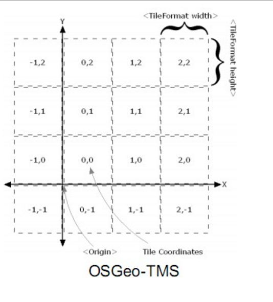
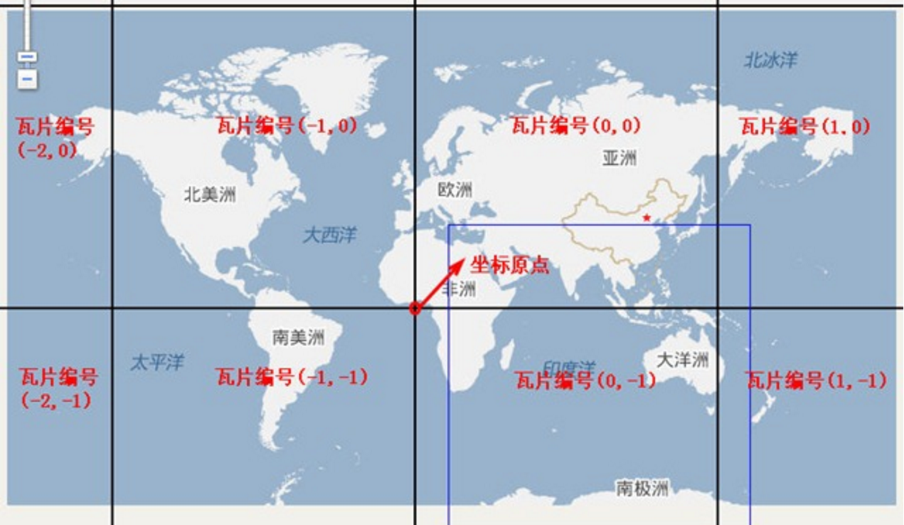

openlayers3瓦片加载的源码浅析与小结
--感谢作者：老羽 (QQ：274103592, 邮箱：michael.zy@163.com, 简书：老羽 )
一、类图与逻辑

上图中列了关于瓦片图层加载相关的重要方法。
- Map对象初始化时根据options.renderer创建ol.renderer.Map的实例，默认是ol.renderer.canvas.Map；
- ol.render.canvas.Map实现了抽象方法createLayerRenderer，这是一个简单工厂，根据不同的图层创建对应的ol.renderer.Layer。其中ol.layer.Tile对应的就是ol.renderer.canvas.TileLayer；
- ol.renderer.canvas.TileLayer.prepareFrame调用source对应的 TileGrid.getTileRangeForExtentAndResolution获取可视范围内的瓦片范围，并循环遍历加载瓦片；
- TileGrid在初始化时就计算出了对应layer的所有瓦片范围：
- calculateTileRanges-》循环遍历resolutions，调用 getTileRangeForExtentAndZ，根据extent计算瓦片范围；
- getTileRangeForExtentAndResolution计算瓦片的范围：
ol.tilegrid.TileGrid.prototype.getTileRangeForExtentAndResolution = function(
extent, resolution, opt_tileRange) {
var tileCoord = ol.tilegrid.TileGrid.tmpTileCoord_;
// 根据extent的左下角的计算瓦片坐标；
this.getTileCoordForXYAndResolution_(
extent[0], extent[1], resolution, false, tileCoord);
var minX = tileCoord[1];
var minY = tileCoord[2];
// 根据extent的右上角的计算瓦片坐标；
this.getTileCoordForXYAndResolution_(
extent[2], extent[3], resolution, true, tileCoord);
// 得到某个resolution级别下的瓦片范围（左下角瓦片坐标 - 右上角瓦片坐标）
return ol.TileRange.createOrUpdate(
minX, tileCoord[1], minY, tileCoord[2], opt_tileRange);
};
// 根据extent左下角及右上角的坐标-origin后得到地图的长宽 / resolution得到像素值；
// 然后 / tileSize 得到需要多少张瓦片；
// 当计算extent右上角的瓦片坐标时，因为瓦片坐标是从0开始计算，当瓦片数量为例如1.5此类小数时，
// 应该是2张瓦片，从0开始计算，那么XY就应该向下取整，取1；0，1两张瓦片；
ol.tilegrid.TileGrid.prototype.getTileCoordForXYAndResolution_ = function(
x, y, resolution, reverseIntersectionPolicy, opt_tileCoord) {
var z = this.getZForResolution(resolution);
var scale = resolution / this.getResolution(z);
var origin = this.getOrigin(z);
var tileSize = ol.size.toSize(this.getTileSize(z), this.tmpSize_);
var adjustX = reverseIntersectionPolicy ? 0.5 : 0;
var adjustY = reverseIntersectionPolicy ? 0 : 0.5;
var xFromOrigin = Math.floor((x - origin[0]) / resolution + adjustX);
var yFromOrigin = Math.floor((y - origin[1]) / resolution + adjustY);
var tileCoordX = scale * xFromOrigin / tileSize[0];
var tileCoordY = scale * yFromOrigin / tileSize[1];
if (reverseIntersectionPolicy) {
tileCoordX = Math.ceil(tileCoordX) - 1;
tileCoordY = Math.ceil(tileCoordY) - 1;
} else {
tileCoordX = Math.floor(tileCoordX);
tileCoordY = Math.floor(tileCoordY);
}
return ol.tilecoord.createOrUpdate(z, tileCoordX, tileCoordY, opt_tileCoord);
};
二、各种瓦片加载的小结
通过上述分析后，应该能较好的理解瓦片的坐标是如何计算的，当应用到不同的地图瓦片加载时就可以得心应手。以下通过不同的几种类型继续说明瓦片计算的方式：
1、TMS瓦片加载
先看看TMS瓦片的规则，origin在左下角，X轴从左至右递增，Y轴从下往上递增（先计算左下角，然后计算右上角）。 
而TileGrid设置origin为ol.extent.getBottomLeft(extent)后，规则也是从左下角到右上角，X轴从左至右递增，Y轴从下往上递增，与TMS规则是完全一致的，参考代码与参考效果如下：
var resolutions = [];
var tileSize = 256;
var extent = [12665080.52765571, 2550703.6338763316, 12725465.780000998, 2601457.820657688]; //深圳地区
var projection = new ol.proj.get("EPSG:3857");
var projectionExtent = projection.getExtent();
for (var i = 0; i < 19; i++) {
resolutions[i] = Math.pow(2, 18 - i);
}
var tilegrid = new ol.tilegrid.TileGrid({
origin: ol.extent.getBottomLeft(projectionExtent),
resolutions: resolutions,
extent: projectionExtent,//extent,
tileSize: [256, 256],
});
var map = new ol.Map({
target: "map",
layers: [
// 调试瓦片
new ol.layer.Tile({
source: new ol.source.TileDebug({
projection: projection,
tileGrid: tilegrid,
tileSize: [256, 256],
extent : projectionExtent,
wrapX: false
}),
})
],
view: new ol.View({
projection: projection,
center: [12697184.079535482, 2563239.3065151004],//深圳
resolutions: resolutions,
}),
});
map.getView().setZoom(1);

假如上面代码中，我想只显示深圳地区的瓦片，其余的瓦片不显示，这种场景是很普遍的，那么代码调整如下：
var tilegrid = new ol.tilegrid.TileGrid({
origin: ol.extent.getBottomLeft(projectionExtent), //origin位置不能变！！！！！！
resolutions: resolutions,
extent: extent,//projectionExtent //设置extent为深圳片区的extent；
tileSize: [256, 256],
});
// ..................
// 调试瓦片
new ol.layer.Tile({
source: new ol.source.TileDebug({
projection: projection,
tileGrid: tilegrid,
extent: extent,//projectionExtent //设置extent为深圳片区的extent；
wrapX: false
}),
})
2、WMTS瓦片加载
WMTS规则如下，origin在左上角，X轴从左至右递增，Y轴是从上往下递增（先计算左上角，然后计算右下角）

那么将tileGrid设置origin为ol.extent.getTopLeft(projectionExtent), 但是TileGrid始终都是先计算左下角的瓦片坐标，然后计算右上角的瓦片坐标，因此Y轴是相反的。那么修改Y轴坐标就可以得到正确值：
var tilegrid = new ol.tilegrid.TileGrid({
origin: ol.extent.getTopLeft(projectionExtent), // WMTS Origin在左上角，origin位置不能变；
resolutions: resolutions,
extent: extent,
tileSize: [256, 256],
});
// 其余代码略.....
new ol.layer.Tile({
source: new ol.source.TileImage({
projection: projection,
tileGrid: tilegrid(),
tileUrlFunction: function (tileCoord, pixelRatio, proj) {
if (!tileCoord) {
return "";
}
var z = tileCoord[0];
var x = tileCoord[1];
var y = -tileCoord[2] - 1; // y轴取反，-1目的是为了从0开始计数；
return ''; // 自行设置URL ，请注意 WMTS中用TileRow标识Y，用TileCol表示X；
}
}),
})
3、百度地图瓦片加载
百度瓦片片规则如下：Origin在[0,0]，X轴从左至右递增，Y轴从下往上递增（从左下角到右上角）。

从百度的瓦片规则看出来，与TileGrid的规则是完全一致，将origin设置为[0,0]即可。参考代码如下：
var tilegrid = new ol.tilegrid.TileGrid({
origin: [0, 0],
resolutions: resolutions,
extent: extent,//projectionExtent,
tileSize: [256, 256],
});
var tilesource = new ol.source.TileImage({
projection: projection,
tileGrid: tilegrid,
tileUrlFunction: function (xyz, obj1, obj2) {
if (!xyz) {
return "";
}
var z = xyz[0]+ 11; // 从第11级开始加载；深圳地区；
var x = xyz[1];
var y = xyz[2];
if (x < 0) {
x = "M" + (-x);
}
if (y < 0) {
y = "M" + (-y);
}
return "http://online3.map.bdimg.com/tile/?qt=tile&x=" + x + "&y=" + y + "&z=" + z + "&styles=pl&udt=20141119&scaler=1";
}
});
4、腾讯地图瓦片加载
腾讯地图完全遵守TMS规则，地图投影坐标系采用Web Mercator投影，最小缩放级别为第4级。参考代码如下：
// QQ地图完全遵守TMS规则;
var tileGrid = new ol.tilegrid.TileGrid({
resolutions: resolutions3857,
tileSize: [256, 256],
extent: projection3857Extent,
origin: ol.extent.getBottomLeft(projection3857Extent), // Origin左下角
});
var tilesource = new ol.source.TileImage({
tileUrlFunction: function (xyz, obj1, obj2) {
if (!xyz) {
return "";
}
var z = xyz[0];
var x = xyz[1];
var y = xyz[2];
return "http://rt1.map.gtimg.com/realtimerender?z=" + z + "&x=" + x + "&y=" + y + "&type=vector&style=0&v=1.1.2"
},
projection: projection3857,
tileGrid : tileGrid
});